5 Centimeters per Second (Japanese: 秒速5センチメートル, Hepburn: Byōsoku Go Senchimētoru) is a 2007 Japanese romantic drama anime film by Makoto Shinkai. It theatrically premiered on 3 March 2007. The film consists of three segments: "Cherry Blossom", "Cosmonaut", and "5 Centimeters per Second", each following a period in Takaki Tōno's life and his relationships with the girls around him.
The film was awarded Best Animated Feature Film at the 2007 Asia Pacific Screen Awards. It received a novelization in November 2007,and a manga adaption illustrated by Seike Yukiko in 2010.

Episode 1: Cherry Blossom
In 1991, Takaki Tōno quickly befriends Akari Shinohara after she transfers to his elementary school in Tokyo. They grow very close to each other due to similar interests and attitudes such as both preferring to stay inside during recess due to their seasonal allergies. As a result, they form a strong bond which is shown when they speak to each other using their given names without any form of honorifics as that is a sign of deep friendship and familiarity in Japan.
Right after graduating from elementary school in 1994, Akari moves to the nearby prefecture of Tochigi due to her parents' jobs. The two keep in contact by writing letters but eventually begin to drift apart. When Takaki learns that his family will be moving to Kagoshima on the other side of the country the following year in 1995, he decides to personally go see Akari one last time since they will be too far apart to see and visit each other once he moves. He also writes a letter for Akari to confess his feelings for her. However, Takaki loses the letter during the journey and a severe snowstorm delays his train for several hours. When the two finally meet late that night and share their first kiss, Takaki realizes they will never be together. They find a shed to spend the night in due to the severe snowstorm and fall asleep after talking late into the night. Takaki departs from the train station the next morning and the two promise to continue writing to each other. As the train rolls away, Takaki decides that the loss of his letter is not important anymore after the kiss while Akari silently looks at her own letter addressed to Takaki which she decided not to give him.
Episode 1: Cherry Blossom
In 1991, Takaki Tōno quickly befriends Akari Shinohara after she transfers to his elementary school in Tokyo. They grow very close to each other due to similar interests and attitudes such as both preferring to stay inside during recess due to their seasonal allergies. As a result, they form a strong bond which is shown when they speak to each other using their given names without any form of honorifics as that is a sign of deep friendship and familiarity in Japan.
Right after graduating from elementary school in 1994, Akari moves to the nearby prefecture of Tochigi due to her parents' jobs. The two keep in contact by writing letters but eventually begin to drift apart. When Takaki learns that his family will be moving to Kagoshima on the other side of the country the following year in 1995, he decides to personally go see Akari one last time since they will be too far apart to see and visit each other once he moves. He also writes a letter for Akari to confess his feelings for her. However, Takaki loses the letter during the journey and a severe snowstorm delays his train for several hours. When the two finally meet late that night and share their first kiss, Takaki realizes they will never be together. They find a shed to spend the night in due to the severe snowstorm and fall asleep after talking late into the night. Takaki departs from the train station the next morning and the two promise to continue writing to each other. As the train rolls away, Takaki decides that the loss of his letter is not important anymore after the kiss while Akari silently looks at her own letter addressed to Takaki which she decided not to give him.
Episode 2: Cosmonaut
In 1999, Takaki is now in the third year of senior high in Tanegashima, where the Tanegashima Space Center is located. Kanae Sumida, a classmate of Takaki, has loved him ever since first meeting him in middle school but has never had the courage to confess her feelings to him. She tries to spend time with him, waiting long after school for the chance to travel home together. However, Takaki appears ignorant of Kanae's feelings and only treats her as a good friend. Kanae observes that Takaki is always writing emails to someone and staring off into the distance as if searching for something far away. It is later shown that Takaki's emails are not being sent to anyone, and he, in fact, deletes them after he finishes writing them. He also has recurring dreams which feature Akari. After a failed attempt to tell Takaki she loves him, Kanae realizes he is looking for something far beyond what she can offer and decides not to say anything, though she believes she will always love him. With such thoughts, she cries herself to sleep.
Episode 3: 5 Centimeters per Second
It is now 2008 and Takaki is a programmer in Tokyo. Meanwhile, Akari is preparing to marry another man. Takaki still longs for Akari to the detriment of his lifestyle. He receives a call from his current girlfriend but does not answer which signifies the end of the relationship. Depressed, Takaki quits his job as he is unable to cope with his feelings for Akari. Akari goes through a box of her old possessions and finds the letter she had written for Takaki many years ago. Takaki finds himself in a convenience store reading a magazine about the decade long journey of the rocket launched in the 2nd act. Takaki and Akari begin a dual narration where they both recall a recent dream. In the dream they relive their last meeting in the snow-filled Iwafune and remember the wish to someday watch the cherry blossoms together again.
Later, while walking down the same road they knew when they were children, Takaki and Akari appear to pass and recognize each other at the train crossing. It's the same place they had promised to watch the cherry blossoms together thirteen years ago, just before Akari moved to Tochigi. On opposite sides of the tracks, they stop and begin to look back, yet a passing train cuts off their view. Takaki waits for the train to pass and finds that Akari is gone. After a moment, he smiles to himself and continues walking as the cherry blossoms stir in the train's wake.
 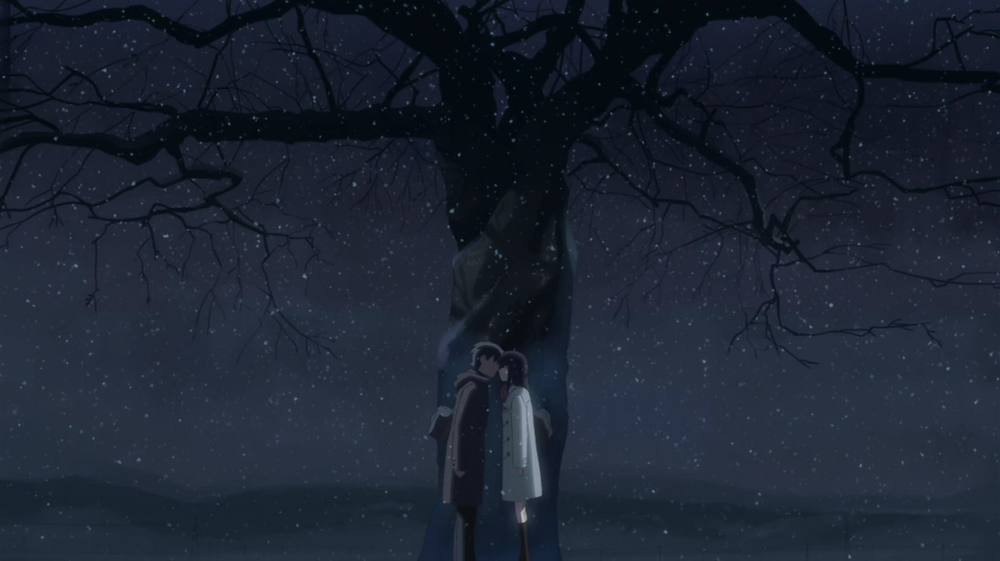
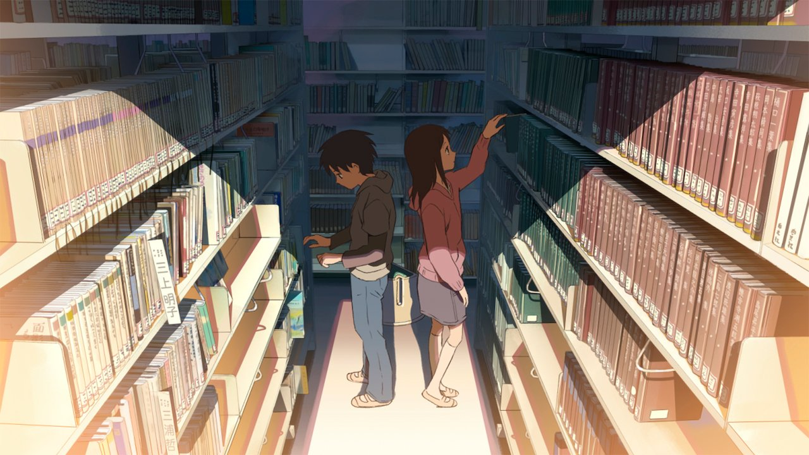
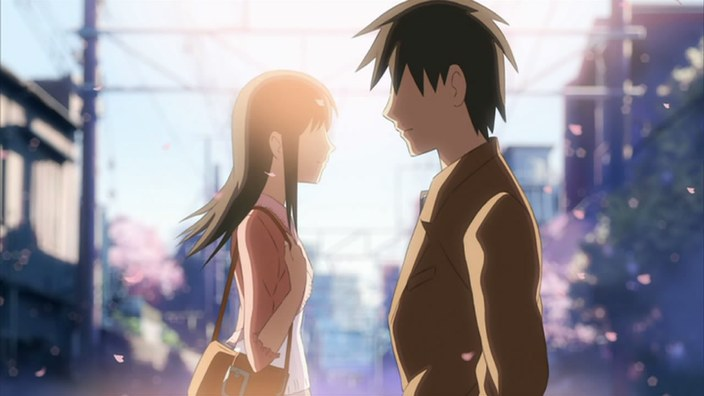
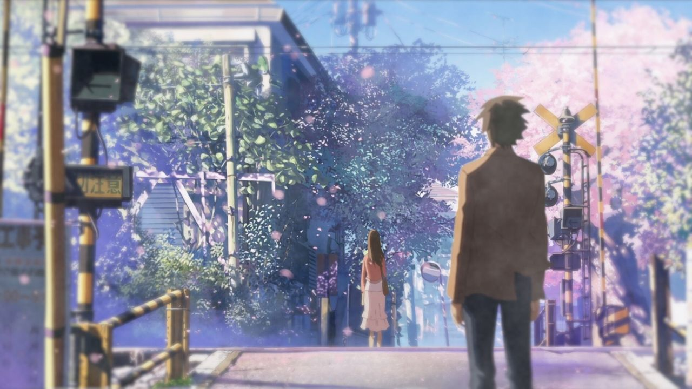
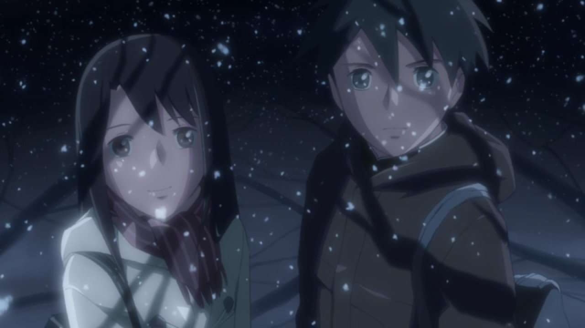
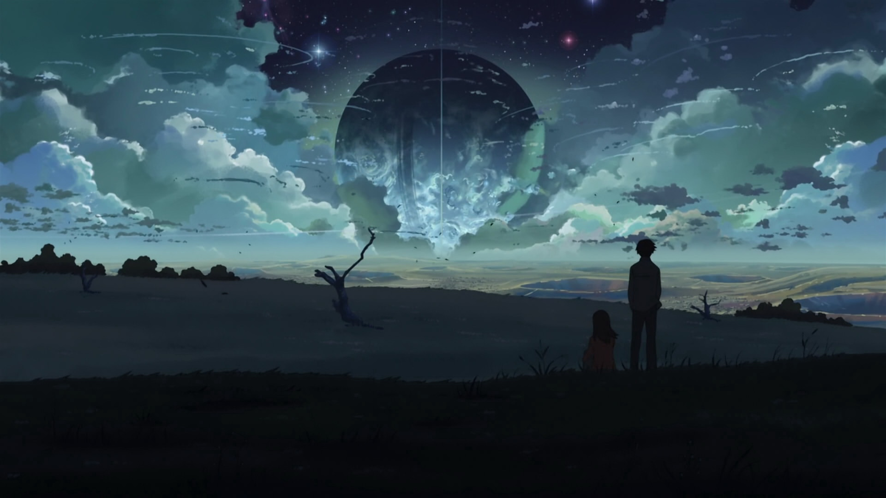
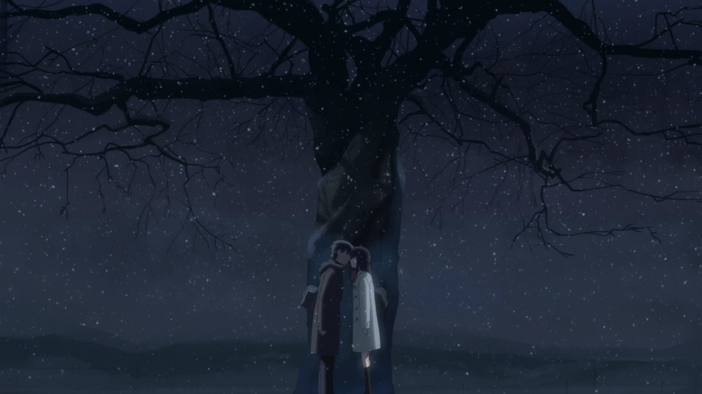
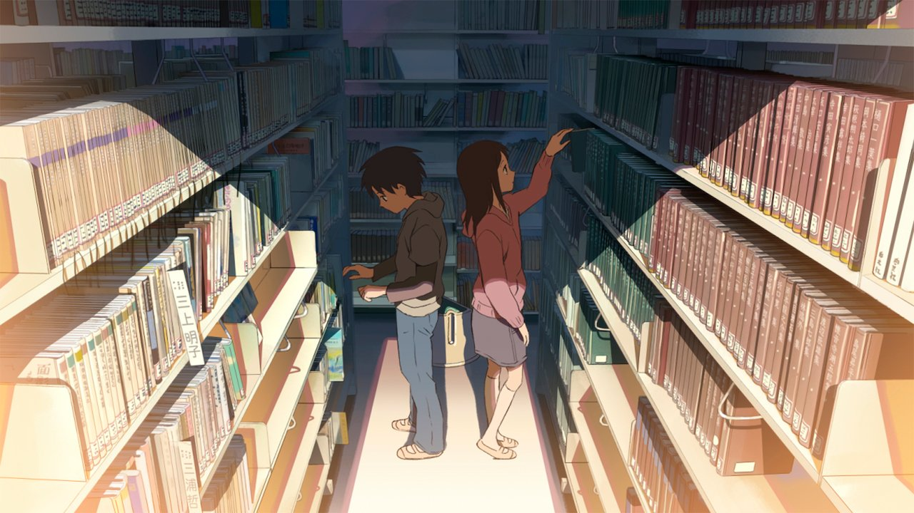
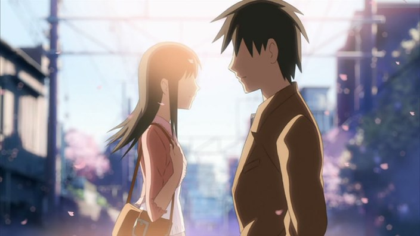
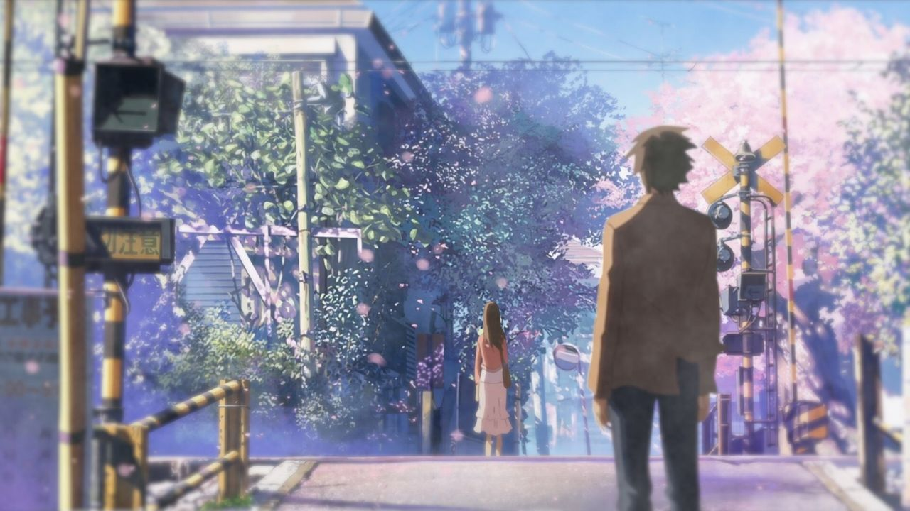
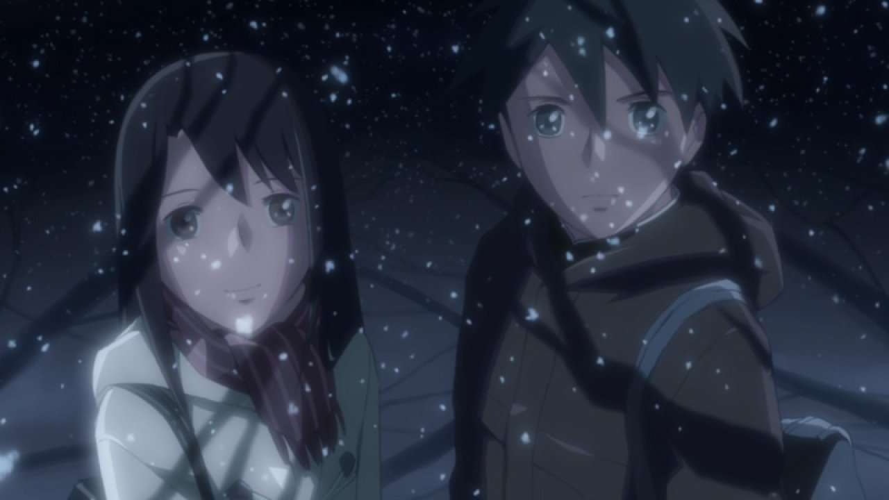
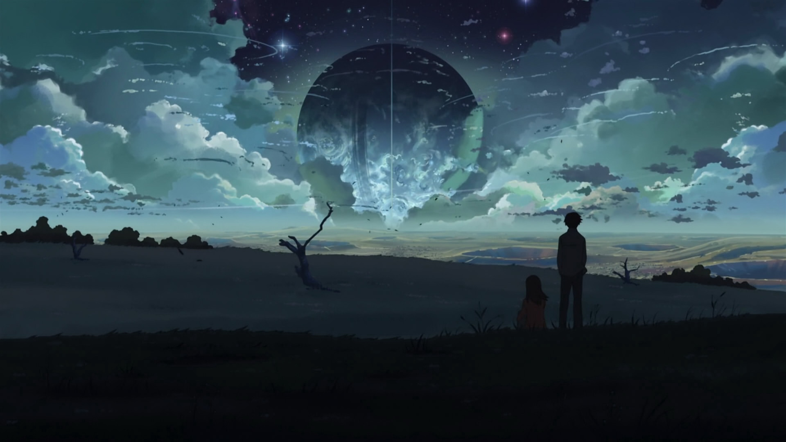